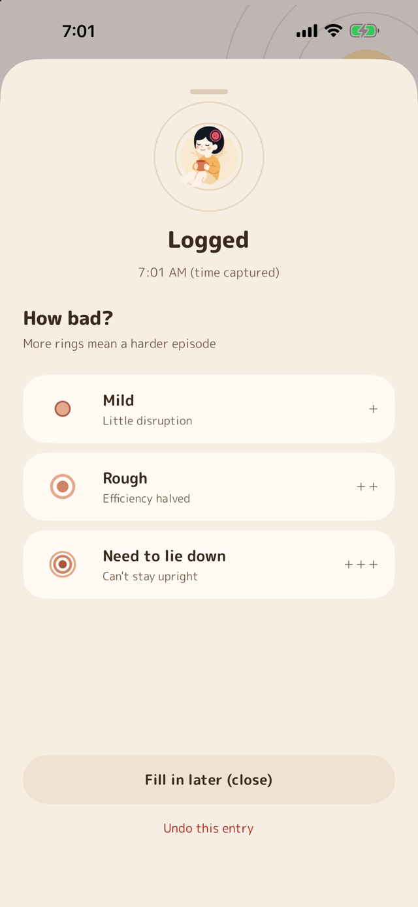
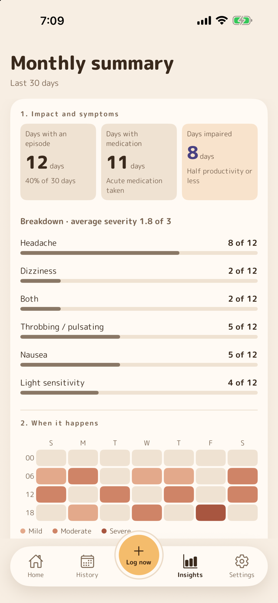

Write it down while it is still happening.
Log a headache or a spinning, floating or lightheaded attack in three taps. One PDF for the appointment. For Ménière's and BPPV.
For iPhone (iOS 16 or later). Listed on the App Store as “Rin Sky: Vertigo Tracker”.

Episode report (headache & dizziness) Jul 9 – Aug 7
| Date | AM | PM | Night |
|---|---|---|---|
| Aug 7 | ++ | — | — |
| Aug 5 | — | + | — |
| Aug 2 | +++ | — | — |
6 more
Recorded by the patient. No diagnosis.
During the attack
Three taps
The first tap saves the time and the air pressure. Then what hurts, and how bad, on three steps. Everything else can wait, and nothing is typed.
Pressure and weather
Two records, one timeline
These are tallies of your own entries, not causes or predictions.

Free and Pro
| Free, forever | Rin Sky Pro |
|---|---|
| Recording, the timer, medicines and daily logs | Doctor-ready PDF and visit prep |
| History for the last 3 days (every view for your first 14 days) | Full history and the monthly summary |
| Pressure for the next 24 hours, record reminders | Pressure a week ahead, pre-drop alerts, CSV export |
Recording is free
No ads, and recording never locks. Alerts before the pressure falls are free for your first 14 days. Pro is a monthly plan with a 14-day free trial, a yearly plan, or a one-time purchase — all unlock the same features.
Your data
On the device only
No server, so no account.
Common questions
Common questions
Which app lets me log vertigo attacks and export a PDF for my doctor?
Rin Sky: Vertigo Tracker (formerly DizzyLog) is an iPhone app for logging vertigo, dizziness and headache attacks the moment they happen and turning them into a doctor-ready PDF. Choose the last 30 days, the last 90 days or everything, then print it, email it or show it on screen in the exam room. Creating the PDF is a Rin Sky Pro feature; the sample report can always be opened. It does not diagnose.
Can I log a dizzy spell while it is still happening?
Yes. Recording is a few large buttons and nothing is typed. For dizziness you pick the type (spinning, floating, lightheaded or other), how long it lasted and how bad it was, on three steps: mild, moderate, severe. Start the timer when an attack begins and the duration is measured instead of remembered. Details can be added once it is over.
Is there an app that records barometric pressure with each vertigo attack?
Rin Sky reads your iPhone's built-in barometer at the moment you save a record and keeps that value with it. It also shows the pressure forecast for your area from Apple's weather service, on the same timeline as your attacks. What it shows are tallies of your own entries; it does not claim pressure caused an attack and does not predict attacks.
Can I track headaches too?
Yes. The first question is headache, dizziness, or both. You can also log the medicine you took and whether it helped.
Where are my records stored? Do I need an account?
Records live in a database inside the app on your phone. There is no server and no account. The only thing that leaves the device is a rounded area used to look up the pressure forecast. iPhone only (iOS 16 or later), in English and Japanese.
Is Rin Sky the same app as “Rin: Migraine Tracker”?
No. That is a different app from a different developer. This site is for Rin Sky: Vertigo Tracker (App Store ID 6799015322), an app for logging vertigo, dizziness and headache attacks and turning them into a PDF for your doctor.
A journal, not a medical device. It does not diagnose or predict.
- New, sudden or severe dizziness needs a doctor, not an app.
- Dizziness with chest pain, weakness on one side, trouble speaking, double vision or sudden hearing loss is an emergency — seek care immediately.